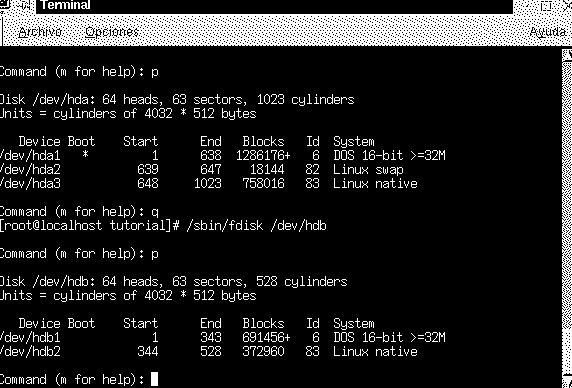

Si tiene usted un gran sistema, o simplemente considera que la información que el mismo contiene es muy importante, se recomienda haga usted estos pasos.
Cree varias particiones con formato ext2, preferiblemente. De forma que una de las particiones, sirva para guardar copias de seguridad, o contenga programas, que no estén en la raíz "/", para evitar que la perdida de la raíz afecte al programa concreto.

Como por ejemplo, puede comprobar en la imagen, en el primer disco "hda", se encuentran las particiones de Windows, Swap y linux native, siendo esta última la raíz, esta partición es la partición esencial de todo el sistema Linux.
En el segundo disco duro "hdb", podremos apreciar otras 2 particiones,
una para Windows, y otra más pequeña, de unos 370 Megas aproximadamente
como partición del sistema de seguridad.
La forma que quieras darle a tu partición es cosa tuya, por ejemplo la partición "+linux" que has visto durante todo el tutorial tiene una forma (resumidamente) así
Pincha aquí para ver la partición.
Pincha aquí para ver un ejemplo de /etc/lilo.conf